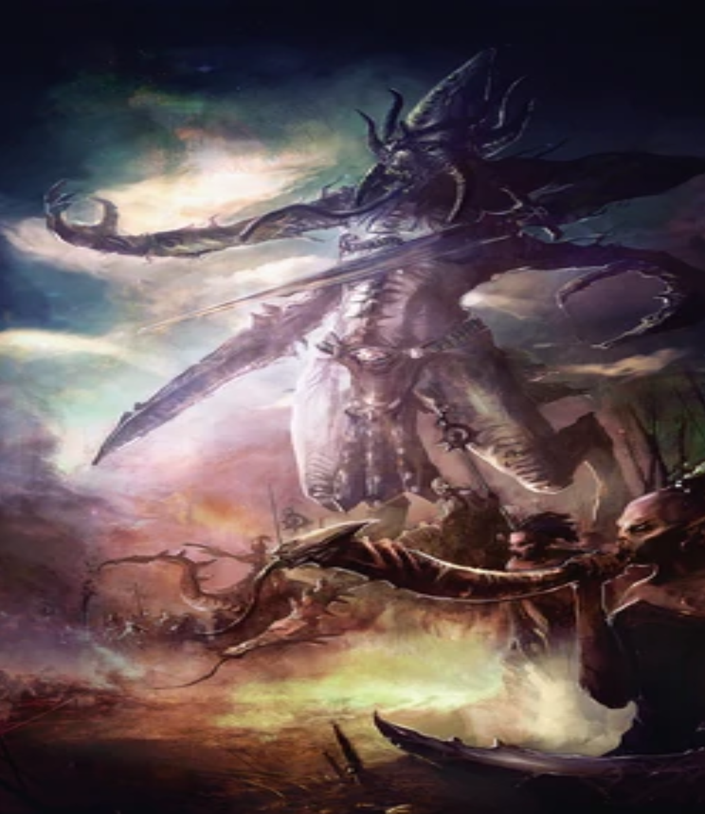

"Slaanesh, also known as the "Dark Prince," the "Prince of Pleasure," the "Lord of Excess," the "Perfect Prince," and the "Prince of Chaos" in the Imperium of Man and "She Who Thirsts" among the Aeldari, is the Chaos God of pleasure, pain, hedonism, excess, perfection and decadence. Lust, pride and self-indulgence are the hallmarks of all who follow it. Slaanesh is the youngest of the four major Chaos Gods, having come to full self-awareness within the Immaterium only during the 30th Millennium. The name Slaanesh is a corruption of the Aeldari term Slaaneth (Slaa meaning "ecstasy" or "pleasure" and Neth meaning "lord" or "prince" in the Aeldari Lexicon; hence, the "Prince of Pleasure"), though ironically, the Aeldari refer to this foul entity only as Sai'lanthresh, "She Who Thirsts." Slaanesh is the Prince of Pleasure, the Dark God dedicated to the pursuit of earthly gratification and the overthrow of all decent behaviour, as well as hedonism and pleasure for its own sake. It is the god of obsession, the Master of Excess in All Things, from gluttony to lust to megalomania. Its sacred number is six and the colours associated with Slaanesh are riotous purples, pinks and black. The Daemonic armies of Slaanesh are known as the Legions of Excess. Wherever mortals are ruled by their own unquenchable desires, the Dark Prince of Chaos is there in the shadows, whispering, tempting, and feasting on a banquet of souls. But this is true in all things, not just carnal pleasures. Those who desire to indulge in the finest culinary delights, the most beautiful artworks, even the most sensual clothing, could all be amongst Slaanesh's disciples. Just as importantly, Slaanesh is also the god of perfection. The singer striving for the most beautiful song or the warrior who seeks the perfect fighting techniques, both could be devotees of Slaanesh."
As Slaanesh’s army approached our allies, horrifying changes began rippling through the Kroot and they began convulsing, screeching horribly as their flesh erupted in mutation. At this point I realized that these were the Kroot who had feasted on the flesh of the enemy dead at Fio’kai. Slaanesh’s main thrust suddenly altered direction and, instead of charging the Kroot, began heading towards my position. Worse still, the Kroot I had stationed in front as the lure, began advancing alongside Slaanesh’s forces with murder in their eyes! I immediately ordered the forces on my left to advance, engage the flank of Slaanesh’s army and link with my Crisis team. The Broadsides fired salvos of rockets into the masses before them, each blast killing dozens of the enemy. Yet they paid little heed to the carnage being wrought within their ranks. Indeed, many appeared to take perverse pleasure in their wounding. My Hammerheads moved around the opposite flank of Slaanesh’s army and began pounding them with hyper-velocity sub munitions from their rail guns. Yet still they came on. The firepower we laid down was above and beyond what the academy at Kais-shi teaches us would be sufficient to break a foe of such numbers, yet Slaanesh’s troops did not falter. Truly were these warriors brave! The slaughter continued, with my warriors falling back and firing into the charging mass. No matter how many we killed, there were more to take their place and I feared we might not have the firepower to deal with these numbers. But then my left hammered into the flank of Slaanesh’s army, throwing it into confusion as the untainted Kroot warriors carved a path through their ranks and a swirling EEC erupted as these warriors fell upon their corrupted kin. In the confusion, I launched a counter-attack of my own. Together with my escorting Shas’vr, I fought through the center of the horde and linked with the bloodstained Kroot to surround Slaanesh. Now, as any student of mine from Kais-shi will tell you, I am a Tau little given to flights of fancy or romantic notions of beauty, but as I faced this being in shocking pinks and blues, I was very nearly entranced by the colors and heady musk's that seemed somehow to permeate my battlesuit. I quickly threw off such notions and dispatched the villain with a shot from my fusion blaster. His death seemed to throw his minions into disarray and within minutes they were a broken mob, fleeing in utter panic. I knew I could not allow such a foe to escape, ordering a full pursuit, and by nightfall we had destroyed every last remnant of Slaanesh’s army. As I returned to our original ambush site, I found the Kroot dispatching their sickly comrades and pitching them atop a vast pyre. I have seen that is the normal custom of the Kroot to feast on the bodies of their fallen kin, but after what had happened in the battle, I could not blame them for their caution. The Kroot would not leave until the pyre had burned to ashes and the remains scattered to the wind. When the fire burned out, we collected our dead and left Ke’lshan. I shudder to think of what might have happened had Slaanesh been allowed to claim Ke’lshan as his own and I offer thanks to the Ethereals that their prescience led my warriors and I to that world. To allow such a debased echo of our former selves to exist would have dishonored all those who have fought and died for the Greater Good.
Chaos Herald - The Masque of Slaanesh
"The Masque of Slaanesh, also known simply as The Masque, is the most infamous Daemonette and Herald of Slaanesh to have ever plagued the sentient creatures of the galaxy. Once the Chaos God Slaanesh's favoured dancer and chief handmaiden, she was cast out by her master, and cursed to forever dance through the Materium and Immaterium alike. The Masque has turned this curse into a potent weapon, forcing any being she manages to seduce with her hypnotic dance to join her performance until the unfortunate soul drops dead from exhaustion."
Traitorous Primarch - Fulgrim
"Today, Fulgrim is a four-armed, serpentine Daemon Prince of Slaanesh who is believed to reside on a Daemon World somewhere within the Eye of Terror. Unknown to almost all, including his own Chaos Space Marines, Fulgrim expressed remorse, repenting his corruption by the Ruinous Powers during the Drop Site Massacre on Isstvan V during the opening days of the Horus Heresy nearly ten millennia ago. A Greater Daemon of Slaanesh residing within the Blade of the Laer, a Chaos artefact within Fulgrim's possession at the time, took advantage of this brief mental weakness to possess his body for a time, but Fulgrim used his spiritual imprisonment to further explore the power of Chaos and eventually turned the tables on the Daemon and forced it into an imprisonment of its own to regain control of his body. Fulgrim emerged from that experience even more committed to the pursuit of the path of sensation offered by Slaanesh and Chaos, and before the Horus Heresy had ended he was rewarded for his devotion with ascension to become a Daemon Prince of the god of excess. His current exact location remains unknown to the Imperium and the majority of the Heretic Astartes of the Emperor's Children Traitor Legion who still wander the galaxy in pursuit of their own pleasure and daemonic ascension. Rumours and uncomfirmed reports have spread since the opening of the Great Rift in the Era Indomitus that Fulgrim is active across the galaxy once more."
Greater Demon
"The loathsome yet beguiling entity of the Warp known as a Keeper of Secrets, also sometimes referred to as a "Bringer of Temptation," or a "Feaster of Pain," is a hermaphroditic Greater Daemon of Slaanesh, the Chaos God of amoral pleasure. The appearance of a Keeper of Secrets, more than any of the other Greater Daemons, can vary wildly. Each of these huge and powerful creatures are created by the capricious whims of its master -- a unique statement of the Prince of Chaos' particular mood and muse at the time of the Daemon's creation. Some have androgynous faces pierced with rings, whilst others appear more bestial with bovine faces that have fanged maws and flickering forked tongues. All of these loathsome creatures are several times the height of an ordinary Human being. They possess jewel-like eyes, their heads are crowned by a splendid outcrop of horns and they slither forward using the most sinuous and seductive of movements. Embodiments of the alluring power of pleasure, the very presence of a Keeper of Secrets is enough to bring even the most stalwart warrior to their knees in anguish and ecstasy."
Lesser Demon
A Daemonette, also known as a "Maiden of Ecstasy," is a Lesser Daemon of Slaanesh, the Prince of Pleasure. Known as "Bringers of Joyous Degradation," "Harbingers of Endless Delights," and "Seekers of Decadence," Daemonettes are all these things and more. Their physical appearance is confounding. At once impossibly twisted and shamefully intriguing, the hermaphroditic form of a Daemonette is both repulsive and nearly impossible for a mortal to turn away from. In battle, Daemonettes are lithe, dexterous killers, whose claws can tear their opponents to shreds, or allure their mortal victims into their clutches. When mounted upon the disturbingly graceful daemonic mounts known as a Steed of Slaanesh, a Daemonette is called a Seeker of Slaanesh, who form the vanguard of the Dark Prince's legions. These lithe, sensual beasts are swift and powerful and track mortals by tasting their desires on the air. Daemonettes can gift their victims with a mixture of excruciatingly painful caresses and the most delicate and tender of killing strokes. Even in the most gruesome of conflicts, the Daemonettes smile in secret ecstasy as they go about their deadly work, delighting in the waves of emotion emanating from their enemies.